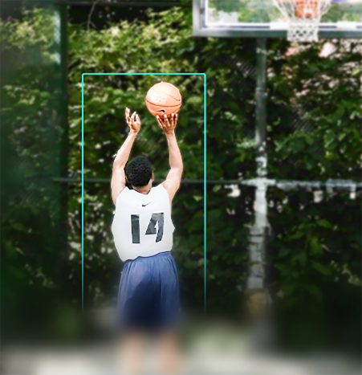
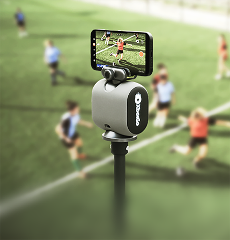

XbotGo 避坑指南：我踩过的四个大坑和防坑清单
从 SD 卡红灯闪到直播推流卡帧，从区域追踪漏拍到 4K 导出爆内存——用 XbotGo 大半年才踩出来的四个真实坑，附防坑清单一次说清。
XbotGo官网 看着简单，一个手机加个小硬件就能拍 AI 自动追踪的比赛录像——教练拍训练、家长拍孩子踢球、俱乐部拍比赛，开箱即用。但我用了快半年，坑踩了四个，有一个甚至差点丢了整场决赛的录像。这些坑都不是什么高端配置问题，全是日常用的场景里没注意到的细节，写出来给后来人避。
坑一：Falcon 红灯闪，录到一半自动停
这是我踩的第一个也是最狠的坑。某次少年队的决赛，下半场刚开球 Falcon 的红灯就开始闪，录了不到十分钟直接停了。我当时以为硬件坏了，拍给客服，结果客服第一句话就是"你的 SD 卡什么格式？"——我后来去XbotGo下载页翻了一下才确认 Falcon 只认 exFAT。
症状：Falcon 指示灯红灯持续闪烁；录制启动几秒后自动停止；App 里提示"存储设备异常"。
原因：90% 是 SD 卡格式不对。Falcon 只认 exFAT——但你去数码店买的新卡，十张里有八张出厂是 FAT32。FAT32 单文件最大 4GB，4K 录像一分钟就超了，所以录到一半直接崩。还有一种情况是卡速不够，杂牌卡虚标 U1 实际读写只有 5MB/s，Falcon 写入跟不上就报错。
解法：先把卡插电脑上查格式，右键属性一看就知道。FAT32 的话直接格式化成 exFAT——注意 Windows 格式化窗口里文件系统那个下拉框，别选错了。换卡的话认准 Samsung、SanDisk、Lexar 这几个牌子，U3 级别的稳当，别图便宜买杂牌。格式化之前一定先导出里面的视频，我那次没做备份，之前的训练素材全没了。
录像结束后别立刻拔卡，等 3 秒让 Falcon 写完文件，急着拔很容易把文件写坏，App 恢复也救不回来。
坑二：直播推流画面卡，YouTube 提示推流不稳定
第一次给老家的家人直播孩子比赛，刚开两分钟 YouTube 就跳警告说推流不稳定，画面一卡一卡的，老家那边看了个寂寞。
症状：YouTube 直播画面间歇性卡住、掉帧；YouTube Studio 后台显示"推流不稳定"；严重时直接断流重连。
原因：XbotGo 的直播不是靠硬件本身推的——Chameleon 用手机的 WiFi 或流量，Falcon 也是连手机 WiFi 推流，所以瓶颈全在手机的上传带宽。比赛场地的公共 WiFi 往往人很多、带宽被分走，看起来信号满格实际上上传只有几百 KB。
解法：开播前先测一下手机的上传速度，1080p 至少要 5 Mbps，4K 要 15 Mbps 起步。场地 WiFi 不稳的话，把手机切到 5G 流量热点给 XbotGo 连，我后来直播全这么干，比公共 WiFi 靠谱多了——流量费可以办个临时加餐包，比丢一场直播划算。画质选 1080p 就够了，大多数家庭网络也吃不下 4K 推流。还有个小技巧：先开始录制再开直播，万一直播断了至少本地有素材，不至于两头空。

坑三：Zone Mapping 画完反而漏掉精彩镜头
Zone Mapping 是个好东西——圈个区域让 AI 只追踪场内、忽略场边乱跑的人。但我第一次画的时候，为了"精准"把区域框得严严实实刚好贴着边线，结果角球时球员冲出了半米，AI 直接把镜头拉回场内，精彩的头球攻门没录上。
症状：AI 追踪突然"断片"，镜头在空无一人的场内晃；回放时发现边线附近的镜头被裁掉了；场边替补起身走动反而触发了追踪跳转（这是区域太大时的反面问题）。
原因：Zone Mapping 的区域边界没有缓冲区——你画多大它就严格卡多大，AI 不会自动留余量。画太小，正常出界的球、边线附近的对抗都会被排除；画太大，场边的干扰又进来了。还有一点，Zone Mapping 是录制前画好、全程生效的，换了场地没重新画，旧的区域就完全不对了——画区域留缓冲的技巧我后来去XbotGo文档翻了一下才想明白。
解法：画区域时故意画大一圈——比实际场地多出一米左右的边界缓冲。这样边线附近的镜头不会被漏掉，场外的干扰又被挡住。室内篮球场可以画成整个半场再往外扩一点，足球场沿着边线和底线各加半米。换了场地一定要重新画，别嫌麻烦——我后来养成习惯，摆好设备第一件事就是调 Zone Mapping。

坑四：4K 素材导出到手机，相册空间被吃爆了
Falcon 拍 4K 是爽，但导出的时候没注意，20 分钟的比赛素材导到手机相册直接占了 8GB，然后微信发的时候又被自动压缩了一遍——等于我存了个巨无霸文件实际用不上。
症状：手机相册突然少了好几 GB 空间；在微信、抖音里发视频时提示"文件过大"只能先压缩；整理相册时发现一堆 XbotGo 的 4K 视频占着地方没动过。
原因：Falcon 录制的是原生 4K 素材，XbotGo App 导出时默认"原尺寸"——没压缩直接存。手机的 4K 相册一个文件轻松上几个 GB，而大多数社交平台都会自动把视频压到 1080p 甚至更低，存 4K 纯属浪费空间。
解法：导出时别选原尺寸，先压到 2K 或者 1080p——肉眼看不出区别，文件小一半不止。真要留原画做后期的话，直接导出到电脑或云存储，别往手机相册塞。我现在养成习惯：重要比赛留一份 2K 在本地相册方便分享，原画导到电脑备份，两边都不耽误。
防坑清单
踩了这四个坑之后我总结了几条，每次开录前扫一遍：
- SD 卡第一次用必查格式：exFAT、U3、主流品牌，三个条件一个都不能少
- 直播前先测手机上传带宽：不够就切 5G 流量热点，别指望场地 WiFi
- Zone Mapping 画大一圈：比实际场地多留 1 米缓冲，边线镜头别丢
- 导出选 2K 别存 4K 原画：手机空间省一半，社交平台照样能发
- 录像完等 3 秒再拔卡：让 Falcon 写完文件，急着拔必坏
知道这些坑之后，XbotGo 其实相当省心——开箱即用的自动追踪、AI 高光剪辑、手动时间轴精修，该有的功能都有。避开这些细节问题，拍比赛录像这件事就再也没掉过链子。相关的排查手册和实操截图我同步到了GitHub、Gitee 和GitCode，国内访问 Gitee 和 GitCode 更顺手一些。